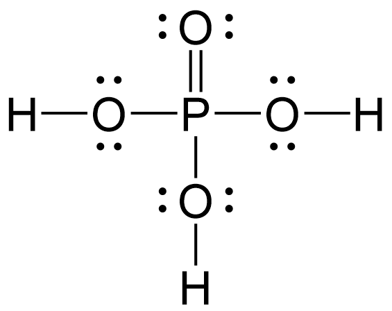
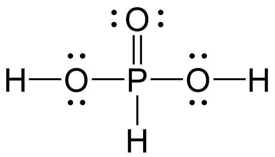
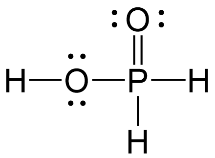

| 結構式 | 酸類 (元數) | 一元取代 | 二元取代 | 三元取代 |
|---|---|---|---|---|
 |
$\mathrm{H_3PO_4}$ 三元酸 |
$\mathrm{H_2PO_4^-}$ 磷酸二氫根 |
$\mathrm{HPO_4^{2-}}$ 磷酸氫根 |
$\mathrm{PO_4^{3-}}$ 磷酸根 |
 |
$\mathrm{H_3PO_3}$ 二元酸！ |
$\mathrm{H_2PO_3^-}$ 亞磷酸氫根 |
$\mathrm{HPO_3^{2-}}$ 亞磷酸根 |
— |
 |
$\mathrm{H_3PO_2}$ 一元酸！ |
$\mathrm{H_2PO_2^-}$ 次磷酸根 |
— | — |